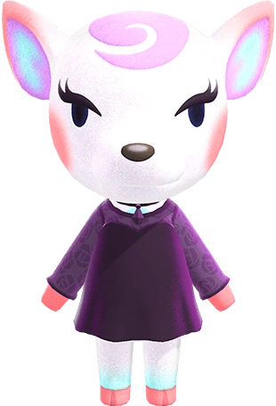
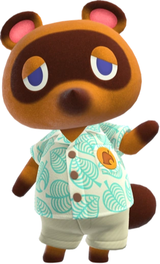

Canela
Animal Crossing: New Leaf
Asistente Municipal | Experta en Proyectos | Amante de la Naturaleza
Apasionada por crear pueblos funcionales y acogedores. Cuando no estoy organizando eventos, disfruto paseando por los jardines y tomando café con extra azúcar.
Educacion
Academia de Servicio Público *2012 - 2013* Especialización en Gestión Municipal y Diseño de Espacios Públicos.
19 ingenierias en distintas universidades
Habilidades ✔️ Gestión de Proyectos Municipales ✔️ Organización de Festivales Estacionales ✔️ Resolución de Conflictos entre Vecinos ✔️ Decoración de Espacios Públicos
Solicitudes de conexión
Totakeke

Presumida
Tus Conexiones (10+)
Candrés
